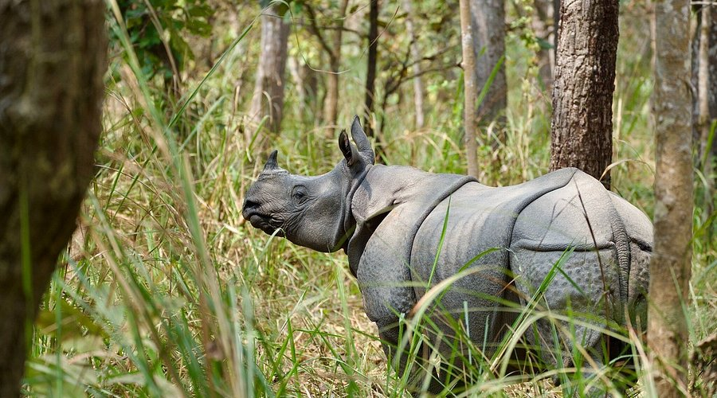
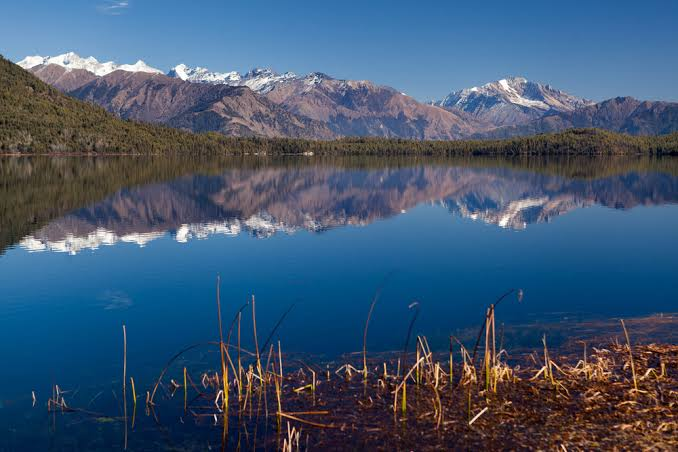

WILDLIFE CONSERVATION AREA , NEPAL
CHITWAN NATIONAL PARK

rhinoceros Chitwan National Park is the first national park of Nepal and one
of the country's most important wildlife conservation areas.Established in 1973, it was designated a
UNESCO World Heritage Centre World Heritage Site in 1984 because of its rich biodiversity and successful
conservation efforts.It is home to many rare and endangered animals, including the Bengal tiger, greater
one-horned rhinoceros, Asian elephant, gharial, and sloth bear. More than 540 species of birds have also
been recorded, making it a popular destination for birdwatchers.

RARA NATIONAL PARK

RARA NATIONAL PARK
Rara National Park is the smallest national park in Nepal, established in 1976 to protect the unique
ecosystem surrounding Rara Lake, the country's largest lake.The park covers an area of about 106 square
kilometers and ranges in altitude from about 1,800 to 4,039 meters above sea level. It features beautiful
forests of pine, spruce, fir, and juniper, along with alpine meadows and stunning mountain scenery.
It is home to a variety of wildlife, including
the red panda, Himalayan black bear, musk deer, Himalayan tahr, and leopard. The park also supports many
species of resident and migratory birds, making it an excellent destination for birdwatching.